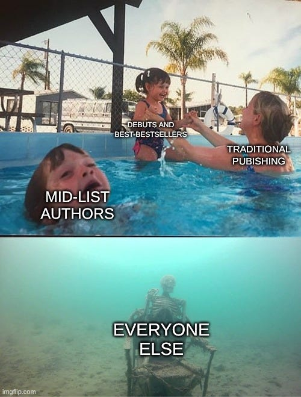

I learnt a few things on the way to writing by first book, most have been re-hashed by every author out there, and even if you haven’t got past the first chapter in your book you probably know most already. I am still learning these lessons, and some are hard. Anyway let me share my five cents worth, because writing your blockbuster is just the start of the Journey.
I wrote most of The Summer of Reasoning on my Chromebook in Google docs. In full screen mode it is an amazing distraction free writing environment. Open the Chromebook, write something, close it, I unfortunately had to do it in three parts as Google docs (before 2023 at least) becomes painful to use over 100K words (The Chromebook has 4GB FFS Google!). Like it or hate it, most publishers (or epub conversion software) expect docx source files, so for the 370,000 word novel I combined the 3 parts in LibreOffice, which also has its faults, but it is fast and can work in docx and also export to Epub format though there are lots of superfluous “<Span>” declarations and your cover needs to be a .jpg not .jpeg. (again probably fixed by the time you read this)
If you are doing this for pleasure and that feel good factor (like me) then sweet, you’ve cracked it, it’s all pretty easy.
- Knock up your masterpiece. No tips here, just keep writing it will happen eventually.
- Proof-read it and re-edit. For me this was emailing it to my kindle or Kobo in Epub format.
- Unless it is for a specific plot element, remove any rants, personal politics, biases etc and go back to step 2. (I may have failed a bit here)
- Go back to step 2. I did this four (or was it five) times, each update fixing dozens of problems, and of course probably adding some new ones, very like programming really! Hot tip here is if you change something, go back a few paragraphs before re-reading it. Feel free to email me any errors, I’m certainly not perfect.
- By now you will be sick of reading your masterpiece so get someone critical to read it and take their advice carefully, then go back to step 2 if necessary.
- (Optionally) Get an ISBN number. In NZ this is free from the National Library, you just have to email them your finished eBook. Amazon Kindle doesn’t need one and Draft2Digital will give you one.
- Create an account on the Kindle Direct Publishing (KDP) page, if you already have a kindle account this is quick, but you do need to upload some bank details for all those mega-dollars you are obviously going to rake in. (trying to keep a straight face writing this bit!) Then upload and publish your book. Ta-Da! 70% of the eBook market can now buy your book.
- If you want to also include the other 30% (Apple, Kobo, Smashwords, Barnes and Noble, etc.) then the easiest way I found was to create an account on Draft2Digital. They are an aggregator and will publish it everywhere including Amazon. Their service costs nothing but they take 10% of your royalties. (10% of nothing is still nothing!). The only gotcha I could see with these guys was that you cannot enroll in the Amazon Kindle unlimited or Prime, but if you do this then you cannot release your book on the other platforms anyway. The DOCX to ePub converter in Draft2Digital is also pretty good and its output file can be downloaded and used as the source for your Kindle KDP book. (2026 Update: D2D Changed their policy to charge $12/year this may be higher or lower as you read this. Your call, I dumped them as my books were on sale for $0)
- Again, really, really work on your cover, blurb and keep the category generic and cover/blurb as close to the subject of the book as possible. I cannot emphasise this enough as I seriously screwed up here, and your first entry in the market really needs to shine.
Note that eBooks are only around 10% of the book market so making the next step to printed book is a good idea and again there is no cost, they just print on demand and take the printing cost out of the sale price, I made a few editing passes after feedback from readers before I went this option as it is harder to change a printed copy. Note printed books make good Christmas presents and look awesome on you bookshelf!
On whatever publishing platform you use, you are going to have to think up your short blurb, keywords and categories you want the book to appear in. Best to do this early as doing it at the last possible moment will ultimately lead you to pick some last-minute rubbish with silly search terms and half cut off description (like I did). Luckily as an eBook I was able to edit it later when my brain started working again.
Optional also, (but cool!) add publisher to the list of services your business offers. It’s only a few changes to your web site and voila you are a publisher; makes you look bigger and more professional!
Don’t Give Up Your Day Job!
Then comes reality. Nobody is going to ever read your book as they are never going to find your book on amazon.com or any of the other platforms out there. I think the statistic I saw was that almost seven thousand new books are published every day, and your masterpiece will probably languish on page four hundred of your target eBook buyers search list forever unless you are an established author or pay money to promote it. There is a great meme I recently saw which sums this all up perfectly.

I wonder how many authors start writing before finding this out and I now wonder how many awesome novels I have missed because of stupid algorithms forever excluding them. (Please Amazon, B&N, Smashwords etc. Add a search filter for books that have not been rated yet!). I did not promote my book, nor mention it much except in passing comments to friends and family. Don’t get me wrong, I really want people to read it, I just don’t want them all to be friends and family.
The algorithm (that shit piece of software that tries to read your mind and recommend your next movie, song or book read) thrives on reviews and star ratings so if you have a following or lots of friends and family I would suggest sucking up your pride and asking them to leave reviews. I did not and still have no reviews so as the years go by it will get to a point where it wont just not be recommended, but it will be difficult to even find. As an author you will come to hate it and everything to do with marketing/promotion. I threw the towel in early and made my books free.
So today, even when I search for my title or author directly (it doesn’t help being called Boz!) my book was still on page two or three of the search results.
Then how do you price it? Free and well people may think its trash (it may be!) but too expensive and nobody is going to ever buy it (assuming they can find it of course!) anyway it is priced at $3.99 $0.99 (Note hot tip, if a book is $0.99 on Kindle it might be free on the other sites as Kindle charges $0.99 minimum).
Another option as I finally did in 2025 was to create a Ko-Fi account and have it downloadable from there at a price the reader wants to pay, this means they can read the book for free and (if they like it) can then make a donation by clicking a “Buy me a coffee” button. See example Here.
A few more observations/tips:
- Don’t write long books until you’re famous! (Lots of reasons)
- Get your categories correct. Genre readers are really finicky and will punish you on the reviews, people who read romance, generally hate sci-fi or horror and vice-versa, so err on the side of caution if you’re doing this for $$$.
- Put some action at the beginning. All the book sellers have the equivalent of the Kindle “send a sample” which lots of people use to judge if it’s a good book. Unfortunately, mine doesn’t really get going until about fifteen percent in, it’s more setting up and character building up until then.
- Don’t, don’t, don’t ever use the real name of someone you know, and even if the name is different and the character is 90% based on someone, they will think it is them. Feel free to use mannerisms of actors or other fictional character, but no, nobody I know is a character in my book nor will they ever be.
- Shout out to AI for letting me design my book cover for free, even if it is only to give your favourite artist/illustrator an idea of what you want. I would love to have paid somebody to do this, and if I ever get famous and need a new cover I certainly will.
- Plots age! I really wish I had set my first book in a completely separate universe. The plot feels perfect as of 2024/2025, but I dread to think how dated and laughable it will look in a few years.
So, has it put me off writing another book? definitely not, but it will stay a part time endeavor and it looks like I won’t be giving up my day job and will still be programming for a few more years.
I am also happy to discus my mistakes with any fellow writer who will listen over a beer or a coffee, I know you’re out there.. 🙂
External links
Don’t give up your day job to become an author | Hacker News (ycombinator.com)
NaNoWriMo: National Novel Writing Month | Hacker News (ycombinator.com)
Pen Pinery – Home – More good information for aspiring Authors